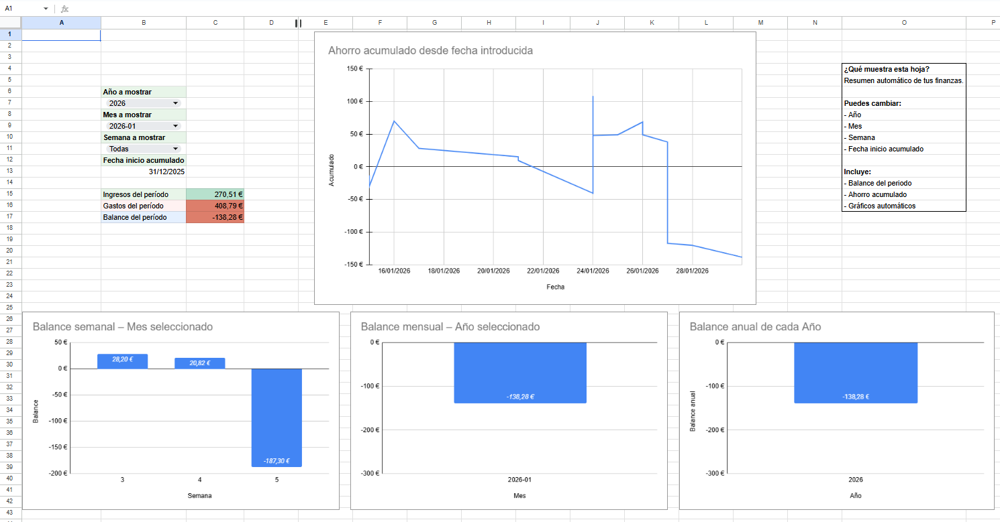
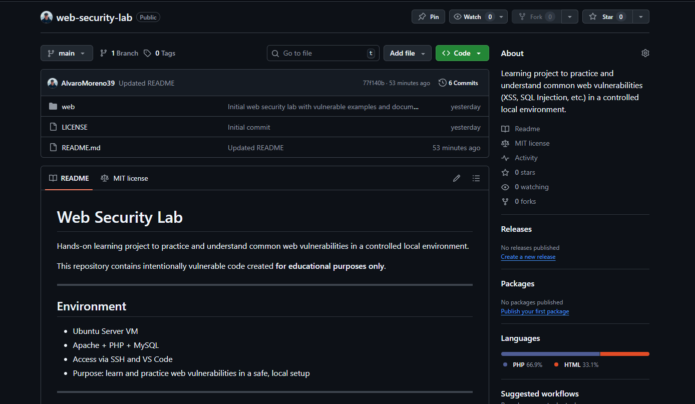

GymTrack - Android App
Android app for creating workout routines, tracking training sessions, and keeping fitness progress organized from a clean mobile interface.

I'm
I am a Junior SOC & Cybersecurity Analyst focused on security monitoring, alert triage, and incident investigation. I have hands-on experience analyzing logs, investigating alerts, and working with SIEM tools such as Elastic/Kibana and Splunk to identify suspicious activity and determine true or false positives.
My training includes both defensive and offensive cybersecurity, allowing me to understand how attacks are performed and how they can be detected and investigated from a SOC perspective. This dual perspective helps me approach incidents with a deeper analytical and technical mindset.
I am currently seeking a SOC Level 1 or Junior Cybersecurity Analyst role where I can contribute to real-world security monitoring and continue developing my skills in detection and incident response.
I hold two vocational degrees in Microcomputer Systems and Networks and Cross-Platform Application Development, and I completed the Hack The Box Academy Junior Cybersecurity Analyst path for the HTB Certified Junior Cybersecurity Associate (CJCA). I am currently focusing my career path on security operations, detection, and investigation, supported by practical offensive and defensive training.
Outside of technical work, I value discipline, consistency, and continuous self-improvement, principles that I apply both in my learning process and professional growth.
Overview of my education and hands-on experience in SOC analysis, IT systems, and technical support.
Hack The Box Academy - Junior Cybersecurity Analyst Path
Hands-on training path completed as part of earning the HTB Certified Junior Cybersecurity Associate (CJCA). It helped me build practical offensive skills such as enumeration, exploitation, Linux and Windows fundamentals, web penetration testing, network service analysis, privilege escalation, and technical reporting, alongside defensive skills such as SIEM analysis with Elastic/Kibana and Splunk, alert triage, true and false positive classification, and evidence-based investigation.
IES San Juan de la Cruz, Madrid
Higher vocational training focused on software development, systems integration, and technical problem-solving.
IES San Juan de la Cruz, Madrid
Technical education in computer systems, hardware maintenance, networking fundamentals, and IT support environments.
BASELINE - Madrid (Hybrid)
Estudios Analiticos Aplicados a la Clinica - Madrid
A selection of personal projects focused on problem-solving, automation, and hands-on technical learning across software development and IT-related tools.
Android app for creating workout routines, tracking training sessions, and keeping fitness progress organized from a clean mobile interface.

Google Sheets tracker for organizing income, expenses, savings, and visual summaries with reusable filters and automated calculations.

Local security lab for studying common web vulnerabilities, exploitation impact, and secure coding mitigations.
Hands-on machine writeups documenting methodology, key findings, and practical lessons learned. Blue Team / SOC-focused investigations are prioritized.
CodePartTwo is an easy Linux machine that starts with a vulnerable web application and ends with a straightforward but very instructive privilege escalation path. The initial foothold comes from a js2py sandbox escape that allows server-side command execution from a JavaScript editor exposed in the application. After gaining a shell as the app user, a local SQLite database reveals password hashes that can be cracked to obtain SSH access as marco.
Cicada is a clean AD attack chain: anonymous SMB access leaks a default password, RID brute-forcing and spraying lead to valid users, and credential hunting across LDAP descriptions and DEV scripts ends in WinRM access. Backup Operators privileges are then abused with VSS to extract NTDS.dit and SYSTEM, enabling Pass-the-Hash as Administrator.
BFT is a Blue Team Sherlock focused on NTFS forensic analysis using the Master File Table. The investigation reconstructs a phishing-driven attack chain by identifying the initial ZIP download, extracting Zone.Identifier metadata, locating the executed payload, validating timestamps, calculating the MFT record offset, and extracting the C2 server from resident file data.
Unit42 is a Blue Team Sherlock focused on Sysmon log analysis from a Windows host infected by a malicious file related to a backdoored UltraVNC campaign. The investigation identifies the malicious process, delivery source, timestomping activity, files created on disk, DNS behavior, outbound network connection, and process termination timeline.
Try changing Difficulty, OS, Technique, or your search terms.
Practical cybersecurity credentials and exam-based learning.
Hands-on exam combining a practical penetration test against a mixed environment with a structured offensive report, plus a defensive investigation where alerts were analyzed in Elastic/Kibana, classified as true or false positives, and supported with clear evidence.
If you would like to get in touch, feel free to reach out through the channels below.
Boadilla del Monte, Madrid, Spain